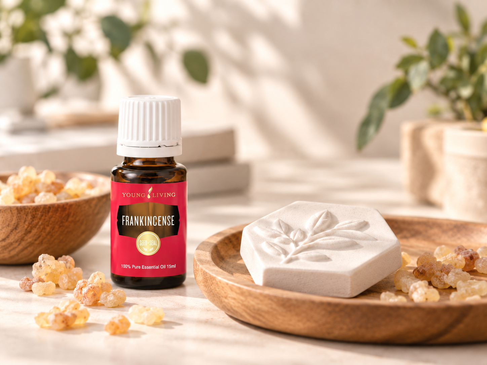

프랑킨센스 에센셜 오일 정보
달콤한 수지감과 따뜻한 우디 향이 어우러진 깊이 있는 향이 특징입니다. 차분하고 안정적인 분위기의 블렌딩을 구성할 때 살펴보기 좋은 오일입니다.
한눈에 보는 정보
향과 분위기
다음 내용은 공식 효능 설명이 아닌 YL Toolkit의 향 선택 가이드입니다.
첫 향에서는 달콤한 수지 느낌이 은은하게 올라오고, 뒤에는 묵직하지 않은 우디 향과 발삼 느낌이 남습니다. 시트러스와 조합하면 무거움을 덜고, 플로럴 향과 섞으면 부드러운 깊이를 더할 수 있습니다.
공식 제품 정보 요약
미국 공식 제품 자료에는 15ml 프랑킨센스 오일로 소개되며, 달콤하고 꿀과 같은 우디 향, 방향 및 외용 사용 안내가 포함되어 있습니다. 국내 제품의 학명·라벨·사용 지침이 다를 수 있으므로 실제 판매 제품의 표시사항을 우선하세요.
생활 속 활용법
프랑킨센스 아로마 스톤

준비물
- 무향 아로마 스톤 또는 석고 방향제
- 프랑킨센스 에센셜오일 1~2방울
사용 방법
아로마 스톤에 프랑킨센스를 1방울 떨어뜨린 뒤 책상이나 개인 공간에 두어 향을 즐겨보세요. 향이 약해지면 한 방울씩 추가합니다.
향의 느낌
따뜻하고 깊은 우디·수지 계열의 향을 단독으로 천천히 경험하기 좋습니다.
작은 팁
처음부터 여러 방울을 사용하기보다 1방울부터 시작하면 향의 강도를 조절하기 쉽습니다.
사용 전 확인
오일이 가구나 섬유에 직접 닿지 않도록 받침이나 별도의 용기를 사용하세요.
더 활용해보기
- 디퓨저 블렌딩
차분한 우디·수지 향을 더하고 싶을 때 소량부터 조합해 보세요. - 라벤더와 조합
부드러운 플로럴 향과 결합해 따뜻하고 편안한 분위기를 만들기 좋습니다. - 레몬과 조합
시트러스 향을 더하면 수지 향의 무게감을 가볍게 정리할 수 있습니다. - 희석량 확인
롤온이나 화장품 배합을 계획한다면 희석 계산기로 총 용량과 농도를 먼저 확인하세요. - 제작비 확인
소분이나 DIY 제작 전 원가 계산기에 구매 가격과 실제 사용량을 입력해 비용을 비교하세요.
잘 어울리는 오일
라벤더 에센셜 오일 →
라벤더와 함께 사용하면 프랑킨센스의 수지와 우디 느낌이 한층 부드러워져 편안하고 차분한 향 구성을 만들기 쉽습니다.
안전 및 주의사항
- 구매한 제품의 국내 표시사항과 사용법을 우선하세요.
- 눈, 귀, 점막 등 민감한 부위와의 접촉을 피하고 어린이의 손이 닿지 않는 곳에 보관하세요.
- 피부에 사용할 때는 민감도와 라벨 안내를 확인하고, 필요한 경우 충분히 희석한 뒤 작은 부위에서 먼저 확인하세요.
- 임신·수유 중이거나 약을 복용 중이거나 치료 중이라면 사용 전 전문가와 제품 라벨을 확인하세요.
사용자의 연령, 피부 상태, 건강 상태와 제품별 라벨에 따라 적절한 사용 방식이 달라질 수 있습니다.
가격과 PV 확인
데이터 기준일과 공통 구매 안내는 제품 정보센터에서 확인하세요. 실제 주문 화면의 가격·PV를 최종 기준으로 합니다.
계산기로 이어서 확인하기
현금·포인트 비교
1PV당 제품가치와 비교 기준을 확인한 뒤 공식 주문 조건과 함께 판단하세요.
프랑킨센스 제품 FAQ
프랑킨센스는 어떤 향인가요?
달콤한 수지감과 따뜻한 우디 향, 은은한 발삼 느낌이 함께 느껴지는 향입니다.
라벤더와 함께 사용하면 어떤 느낌인가요?
라벤더가 우디·수지 향의 각을 부드럽게 이어 주어 차분한 플로럴 우디 분위기를 만들기 쉽습니다.
디퓨저에 활용할 수 있나요?
미국 공식 자료에는 방향 사용 안내가 있습니다. 실제 사용 시간과 방울 수는 기기 설명서와 국내 제품 라벨을 우선하세요.
피부 사용 전 무엇을 확인해야 하나요?
국내 제품 라벨, 피부 민감도, 희석 여부와 작은 부위 테스트를 먼저 확인하세요.
제품별 공식 출처
공식 자료 확인일: 2026-08-04 · 가격·PV 데이터 기준일: 2026-09-04
공통 안전 원칙은 제품 정보센터 이용 전 확인사항을 참고하고, 이 제품의 공식 자료와 국내 라벨을 최종 확인하세요.